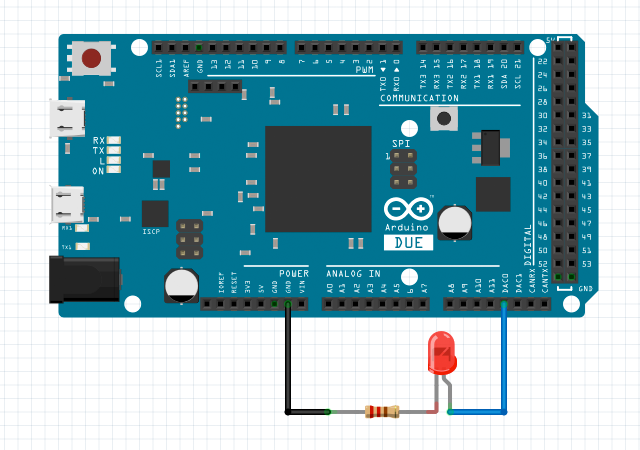

var led1 = new AnalogOut(); // set up an analog output with pin DAC0 on unit 1 led1.setup(1, Arduino.DUE.DAC0); led1.setValue(0); // the analog output is set to 0, turn off the LED led1.setValue(32767); // the analog output is set to 32767, 50% LED brightness led1.setValue(65535); // the analog output is set to 65535, 100% LED brightness
The analog output can be set to a 16-bit unsigned integer number.
In other word, the minimum analog value is 0, and the maximum analog value is 65535.
With h5control, only Arduino DUE board has two DAC pins that can be used for analog output.
AnalogOut
setup(unit, pin)
initialize an analog output object with a specified pin on a specified unit.
return value: true if successful, otherwise false.
setValue(value)
set a number between 0 to 65535 to parameter value for changing the voltage level of analog output signal.
return value: true if successful, otherwise false.
getValue()
request to get the present voltage level of the analog output signal, an event callback whenGetValue() will be received later.
return value: the analog output value, a number between 0 to 65535
Return Value Note:
The function will return a value when your h5control program uses waitRsp mode, but no return value when uses nowaitRsp mode.
whenSetup(done)
receive the callback when setup done. parameter done is true if successful or false otherwise.
whenSetValue(value)
receive the callback when analog output value has been set.
whenGetValue(value)
receive the callback to get the present analog output value after called function getValue().
Arduino.DUE
analog output pins on Arduino DUE board:
DAC0
DAC1